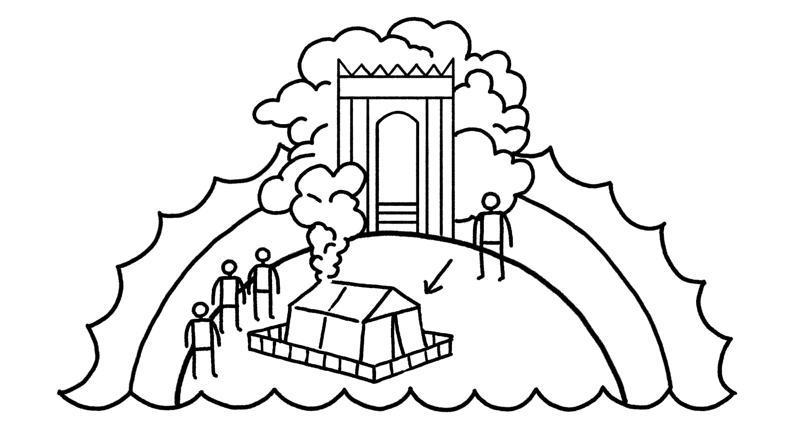

Class Notes: Heaven and Earth
92 of 141
Session 24: Heaven and Earth United in the Temple
Key Takeaways
God consistently brings the heavenly reality into the earthly reality. We see this with Eden, Babylon,
Moses on Mount Sinai, Jacob’s dream, the tabernacle, and the temple.
Ultimately, this occurs in Jesus, the true human made in God’s image, who “dwelt (literally
“tabernacled”) among us” (John 1:14) like God’s glory in the tabernacle.
The Many Meanings of “Heaven” in the Bible
Given the reality of the waters above the heavens (see “The Waters Above and Below" notes in session 16), the
Hebrew word “heavens” (shamayim / שמים) can be used in three distinct ways within biblical cosmic
geography.
“Heavens” as the Sky-Dome That Divides the Cosmic Waters Above and Below
Genesis 1:6-8 NRSV*
6 And God said, “Let there be a dome in the midst of the waters, and let it separate the waters from the
waters.” 7 So God made the dome, and separated the waters which were below the dome from the waters
which were above the dome. And it was so. 8 God called the dome “heavens.” And there was evening and
there was morning, a second day.
*Key Words Adapted by Teacher
“Heavens” as the Landward Side of the Sky-Dome That Is Visible to Us and Accessible to the
Birds
Genesis 1:20 ESV*
And God said, “Let the waters swarm with swarming living creatures, and birds that fly over the land
against the surface of the dome of the heavens.”
*Key Words Adapted by Teacher
Psalm 8:8a NASB
... the birds of the heavens ...
See also Psalm 79:2
“Heavens” as God’s Divine Throne Above the Sky-Dome
Class Notes: Heaven and Earth
93 of 141
Psalm 2:4 NIV
The one enthroned in the heavens ...
Psalm 11:4 NIV
The LORD is in his holy temple;
the LORD is on his heavenly throne.
He observes everyone on earth;
his eyes examine them.
Heaven, the Temple, and Mount Zion
The heavenly temple is God’s transcendent dwelling, and people glimpse it when they encounter God in
places where Heaven and Earth overlap.
Genesis 28:10-17 NASB
10 Then Jacob departed from Beersheba and went toward Haran. 11 He came to a certain place and spent
the night there, because the sun had set; and he took one of the stones of the place and put it under his
head, and lay down in that place. 12 He had a dream, and behold, a stairway/ramp was set on the land with
its top reaching to the skies; and behold, the angels of God were ascending and descending on it. 13 And
behold, the LORD stood above it and said, “I am the LORD, the God of your father Abraham and the God of
Isaac ... ” 16 Then Jacob awoke from his sleep and said, “Surely the LORD is in this place, and I did not know
it.” 17 He was afraid and said, “How awesome is this place! This is none other than the house of God, and
this is the gate of heaven.”
Exodus 24:9-13 NASB
9 Then Moses went up [to Mount Sinai] with Aaron, Nadab and Abihu, and seventy of the elders of Israel, 10
and they saw the God of Israel; and under his feet there appeared to be a pavement of sapphire, as clear as
the sky itself. 11 Yet he did not stretch out his hand against the nobles of the sons of Israel; and they saw
God, and they ate and drank. 12 Now the LORD said to Moses, “Come up to me on the mountain and remain
there, and I will give you the stone tablets with the law and the commandment which I have written for their
instruction.” 13 So Moses arose with Joshua his servant, and Moses went up to the mountain of God.
Exodus 24:15-25:9 NASB
15 Then Moses went up to the mountain, and the cloud covered the mountain. 16 The glory of the LORD
rested on Mount Sinai, and the cloud covered it for six days; and on the seventh day he called to Moses
from the midst of the cloud. 17 And to the eyes of the sons of Israel the appearance of the glory of the
LORD was like a consuming fire on the mountain top. 18 Moses entered the midst of the cloud as he went
up to the mountain; and Moses was on the mountain forty days and forty nights. 1 Then the LORD spoke to
Moses, saying ... 8 “Let them construct a sanctuary for me, that I may dwell among them. 9 According to all
that I am going to show you, as the pattern of the tabernacle and the pattern of all its furniture, just so
you shall construct it.”
Class Notes: Heaven and Earth
94 of 141
The heavenly temple is God’s transcendent dwelling, and people get glimpses of it when they encounter God
in places where Heaven and Earth overlap. The worldview in these stories shows us the heavenly and earthly
realms are not completely separate because they overlap at key places and times. We might say these are
moments of “Heaven on Earth.” Notice that both of these stories are about the foundation of sacred spaces:
Jacob makes a temple in Bethel, and Moses models the tabernacle after the heavenly temple.
In this worldview, Israel’s tabernacle and temple are a micro-cosmos of all creation, the place where Heaven
and Earth are one. This explains why these sacred spaces and the stories of their creation are loaded with
cosmic imagery and symbolism.
Creation in Genesis 1
The Tabernacle in Exodus 25-31, 35-40
The Temple in 1 Kings 6-8
Created by the Spirit of
God (אלהים רוח) [Gen.
1:2]
Created by Bezalel of Judah, who is “filled
with the Spirit of God, wisdom and
understanding” (רוח אלהים) [Exod. 31:3;
35:30-31]
Created by Hiram of Tyre, who is
“filled with wisdom and
understanding” [1 Kgs. 7:13-14]
Creation is the product
of seven divine speech
acts in Genesis 1.
Seven days open with
divine command: “And
God said …”
Day 1 - Gen. 1:5
Day 2 - Gen. 1:8
Day 3 - Gen. 1:13
Day 4 - Gen. 1:19
Day 5 - Gen. 1:23
Day 6 - Gen. 1:31
Day 7 - Gen. 2:1-3
Sabbath
Tabernacle instructions come in seven
divine speeches.
Seven speeches open with divine
command: “And YHWH spoke to Moses
…”
Speech 1 - Exod. 25:1
Speech 2 - Exod. 30:11
Speech 3 - Exod. 30:17
Speech 4 - Exod. 30:22
Speech 5 - Exod. 30:34
Speech 6 - Exod. 31:1
Speech 7 - Exod. 31:12
Sabbath Command
The temple is dedicated with
seven petitions by Solomon,
leading to a seven-day feast.
Petition 1 - 1 Kgs. 8:31-32
Petition 2 - 1 Kgs. 8:33-34
Petition 3 - 1 Kgs. 8:35-37a
Petition 4 - 1 Kgs. 8:37b-40
Petition 5 - 1 Kgs. 8:41-43
Petition 6 - 1 Kgs. 8:44-45
Petition 7 - 1 Kgs. 8:46-53
Seven-day feasts
“and the skies and the
land were completed (
כלה)” [Gen. 2:1]
“and Moses completed (כלה) the work (
מלאכה)” [Exod. 40:33]
“and Solomon built the temple
and he finished (כלה) it” [1 Kgs.
6:14]
“and God rested (שבת)
on the seventh day …”
“and the cloud covered the tent of
meeting, and the glory of YHWH filled the
tent.” [Exod. 40:34]
“and the cloud filled the house
of Yahweh” [1 Kgs. 8:10-11]
Comparing Creation, the Tabernacle, and the Temple. Created by Tim Mackie for BibleProject Classroom:
Heaven and Earth (2019).
The three-tiered universe in Genesis 1 (skies-land-sea) directly corresponds to the three-tiered geography of
Eden in Genesis 2-3. This three-tiered design is symbolically recalled in the design of ancient temples, and it
Class Notes: Heaven and Earth
95 of 141
specifically aligns with symbolic features of Israel’s temple.
Tabernacle / Temple
Cosmic Geography in Genesis 1:1-
2:3
Cosmic Geography in Genesis 2:4-
3:24
Holy of holies
Heaven
The middle of the garden
Holy place
• Menorah = tree
• Cherubim = animals
• Priests = humans
The land
• Fruit trees
• Animals
• ‘adam
The garden in Eden
Courtyard
• Bronze sea (1 Kgs.
8:23)
The waters
The land outside the garden
The Tabernacle or Temple Related to Cosmic Geography. Created by Tim Mackie for BibleProject
Classroom: Heaven and Earth (2019).
“The function of these correspondences is to underscore the depiction of the sanctuary as a world, that is,
an ordered, supportive, and obedient environment, and the depiction of the world as a sanctuary, that is, a
place in which the reign of God is visible and unchallenged, and his holiness is palpable, unthreatened, and
pervasive. ... The Temple was conceived as a microcosm, a miniature world. But it is equally the case that in
Israel, the world, or I should say, the ideal world ... was conceived as a macro-temple, the palace of God
which is permeated with his presence and in which all is aligned with his will.”
Levenson, Jon (1994). Creation and the Persistence of Evil: The Jewish Drama of Divine Omnipotence.
Princeton University Press. 86.
“The Hebrew Bible is replete with descriptions of creation as a tabernacle which God has pitched (Ps. 104;
Job 9:8; Isa. 40:22), or a house that God has established (with pillars, windows, and doors: Job 26:11;
Gen. 7:11; Ps. 78:24). Consequently, the temple of Zion, as a sanctuary that God has established, becomes a
microcosmic metaphor for creation itself. This finds explicit expression in Psalm 78:69.”
Gage, W.A. (2001). The Gospel of Genesis: Studies in Protology and Eschatology. Wipf and Stock Publishers.
54.
Psalm 78:68-69 NASB
68 But chose the tribe of Judah,
Mount Zion which he loved.
69 And he built his sanctuary like the heights,
Like the land which he has founded forever.
Class Notes: Heaven and Earth
96 of 141
The geography of Eden within the dry land of Genesis 2-3 depicts a three-part topography. This conception of
the garden of Eden on the dry land provides a symbolic template for Israel’s tabernacle temple, especially as
described in Ezekiel’s ideal/restored temple (Ezek. 40-48).
Three-Part Eden Geography Diagram. Created by Tim Mackie for BibleProject Classroom: Adam to Noah (2020).
Class Notes: Heaven and Earth
97 of 141
Three-Part Tabernacle Layout. Created by Tim Mackie for BibleProject Classroom: Adam to Noah (2020).
Adapted from Morales, Michael L. (2015). Who Shall Ascend the Mountain of the Lord?: A Biblical Theology of the Book
of Leviticus. IVP Academic. By BibleProject for Classroom: Adam to Noah (2020).
“In order to understand how the temple functioned we must first look at how those who worshipped there
understood space and time. Modern ideas of space and time are very different, and if we are not aware of
Class Notes: Heaven and Earth
98 of 141
this, everything about the temple seems strange and almost ridiculous. ... We have to try and stand where
ancient worshippers stood, think as they thought, and look where they looked, and perhaps we will glimpse
what they saw. ... Our experience of the material world is made possible by our perception of the three
dimensions of space ... and by the dimension of time. The [biblical] world envisages another manner of
being, a dimension in which there is neither spatial limitation nor time in our sense, but one which shares
with our world the forces of love, hate, obedience, and rebellion. This other world is often called ‘Eternity,’
which does not mean an unbelievably long span of time, but rather an existence without time. ... It lies
outside our experience of time, and actually underlies in its entirety every perception we have of time. It
could perhaps be called a belief in certain basic principles on which the world was based, principles which
could be compared to our ‘laws’ of science. ... In the same way, eternal space and time were present in
their entirety in the temple, so that a sacred space of some three hundred square meters could represent
the entire world. ... The Hebrew word for this mode of representation is mashal (משל), translated as
“parable.” [In this worldview] a story or vision of the heavenly world could correspond or represent a
situation on earth. ...
The temple in Jerusalem was ... not just a highly decorated building, but rather a place where the eternal
and earthly were one. The decorations represented the heavenly world, but it was more than just a
representation. The temple actually was the heavenly world. ... [This is why] it is not always possible to
know whether the setting of a biblical story [like Isaiah 6] is the earthly temple or the heavenly court of the
Holy One. Whereas we always want to separate heaven and earth, the ancient biblical authors did not. The
rituals of the temple were performed on earth, but were part of an eternal heavenly reality.”
Baker, Margaret (2008). The Gate of Heaven: The History and Symbolism of the Temple in Jerusalem.
Sheffield Phoenix Press Ltd. 58-61.
The Complex Portrait of Heaven as “Above” and “Within” and
“Without”
While the dominant imagery of the heavens is above the sky, there are other texts about God’s presence that
use a totally different spatial scheme.
God’s Presence Is Within the Sacred Space (Tabernacle or Temple)
Exodus 29:42-45 NIV
42 ... at the entrance to the tent of meeting, before the LORD. There I will meet you and speak to you; 43
there also I will meet with the Israelites, and the place will be consecrated by my glory. 44 So I will
consecrate the tent of meeting and the altar and will consecrate Aaron and his sons to serve me as priests.
45 Then I will dwell among the Israelites and be their God.
Numbers 7:89 NASB
Now when Moses went into the tent of meeting to speak with him, he heard the voice speaking to him
from above the mercy seat that was on the ark of the testimony, from between the two cherubim, so he
spoke to him.
Creation Is God’s Cosmic Temple
Class Notes: Heaven and Earth
99 of 141
Psalm 139:7-12 NIV
7 Where can I go from your Spirit?
Where can I flee from your presence?
8 If I go up to the heavens, you are there;
if I make my bed in the depths, you are there.
9 If I rise on the wings of the dawn,
if I settle on the far side of the sea,
10 even there your hand will guide me,
your right hand will hold me fast.
11 If I say, “Surely the darkness will hide me
and the light become night around me,”
12 even the darkness will not be dark to you;
the night will shine like the day, for darkness is as light to you.
Jeremiah 23:23-24 NIV
23 “Am I only a God nearby,” declares the LORD,
“and not a God far away?
24 Who can hide in secret places
so that I cannot see them?” declares the LORD.
“Do not I fill heaven and earth?” declares the LORD.
Acts 17:24-28 NIV
24 The God who made the world and everything in it is the Lord of heaven and earth and does not live in
temples built by human hands. 25 And he is not served by human hands, as if he needed anything. Rather,
he himself gives everyone life and breath and everything else. 26 From one man he made all the nations,
that they should inhabit the whole earth; and he marked out their appointed times in history and the
boundaries of their lands. 27 God did this so that they would seek him and perhaps reach out for him and
find him, though he is not far from any one of us. 28 “For in him we live and move and have our being.” As
some of your own poets have said, “We are his offspring.”
God's Presence Transcends the Heavens Into the Hyper-Heavens
1 Kings 8:10-13, 27 NIV
10 When the priests withdrew from the Holy Place, the cloud filled the temple of the LORD. 11 And the
priests could not perform their service because of the cloud, for the glory of the LORD filled his temple. 12
Then Solomon said, “The LORD has said that he would dwell in a dark cloud; 13 I have indeed built a
magnificent temple for you, a place for you to dwell forever.” ... 27 “But will God really dwell on the land?
The heavens, even the heavens of the heavens cannot contain you. How much less this temple I have
built!”
Notice the paradox presented by God’s localized presence in the temple. It is a building “on the land” that
hosts a special manifestation of the divine presence. But at the same time, Solomon acknowledges that the
Class Notes: Heaven and Earth
100 of 141
entire world is not sufficient to host the immensity of God’s presence, and neither are the heavens or the
heavens of the heavens!
This phrase, “the heavens of the heavens” cracks open the symbolic nature of heaven language because even
the heavens that we know are only the outer layer, so to speak, of the ultimate heavenly realm that lies
beyond our detection and experience.
Some biblical authors refer to these ultimate heavens of the divine realm when they experience God’s
presence in visions, dreams, and apocalypses.
2 Corinthians 12:1-4 NASB*
1 Boasting is necessary, though it is not profitable; but I will go on to visions and revelations of the Lord. 2 I
know a man in the Messiah who fourteen years ago—whether in the body I do not know, or out of the
body I do not know, God knows—such a man was caught up to the third heaven. 3 And I know how such a
man—whether in the body or apart from the body I do not know, God knows—4 was caught up into
Paradise and heard inexpressible words, which a man is not permitted to speak.
*Key Words Adapted by Teacher
Isaiah 6:1-4 NASB
1 In the year of King Uzziah’s death I saw Yahweh sitting on a throne, lofty and exalted, with the train of his
robe filling the temple. 2 Seraphim stood above him, each having six wings: with two he covered his face,
and with two he covered his feet, and with two he flew. 3 And one called out to another and said,
“Holy, Holy, Holy, is the Lord of hosts,
The whole earth is full of his glory.”
4 And the foundations of the thresholds trembled at the voice of him who called out, while the temple was
filling with smoke.
Revelation 4:1-2, 6 NASB
1 After these things I looked, and behold, a door standing open in Heaven, and the first voice which I had
heard, like the sound of a trumpet speaking with me, said, “Come up here, and I will show you what must
take place after these things.” 2 Immediately I was in the Spirit; and behold, a throne was standing in
Heaven, and One sitting on the throne. ... 6 and before the throne there was something like a sea of glass,
like crystal; and in the center and around the throne, four living creatures full of eyes in front and behind.

Class Notes: Heaven and Earth
101 of 141
The Tabernacle/Temple as God’s Space. Illustration created by Tim Mackie for BibleProject Classroom: Heaven
and Earth (2019).
Reflection Question
Where in the biblical story do you see Heaven and Earth merging?
Class Notes: Heaven and Earth
102 of 141
Session 25: Reflections on Heaven Coming to Earth
Key Takeaways
The cosmic mountain, Eden, the temple, and the tabernacle were all symbols pointing toward an
ultimate reality. Jesus, in human form, claims to be this ultimate reality.
Heaven is the ultimate cause and source of all life, but it is invisible and inaccessible unless we have our
imaginations transformed.
Reflections on Heaven and Earth
“Christians have a long tradition of adjusting and translating from biblical to contemporary cosmologies,
often without realizing it. In the history of Christianity, the ancient Israelite cosmology gave way to the
Ptolemaic cosmology, which dominated Christian thought for centuries. [Ptolemaic cosmology was earth-
centric but envisioned the earth as a globe.] Most Christians did not even notice that a shift had taken
place. And once Copernican cosmology finally supplanted the Ptolemaic, Christians had little trouble
adapting to that either ... Remember, in the biblical texts, the symbolic meaning of the image of Heaven
above had always been the most important thing about such language. Height or depth spoke of relative
importance and rank … and for the biblical authors, the idea of Heaven being 'above' the rest of creation
meant that Heaven was the most important dimension of the created world, because from that high and
exalted place God ruled over all things. Interpreting the language of the high Heaven non-geographically
does not threaten the heart of this biblical teaching at all—the truth Scripture pointed to was always that
Heaven is invisible and inaccessible to humans, and yet is at the heart of creation because divine life and
rule flow from it. Whether or not Heaven is also literally above the sky is incidental to the truth that
Scripture points towards.”
Parry, Robin A. (2014). The Biblical Cosmos: A Pilgrim's Guide to the Weird and Wonderful World of the Bible.
Wipf and Stock Publishers. 180-181.
This session has no other notes